📸 3D Imaging
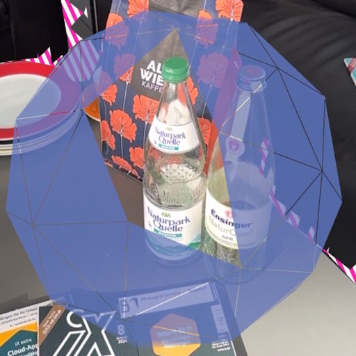
IntelliCap: Intelligent Guidance for Consistent View Sampling
IEEE ISMAR 2025

User-in-the-Loop View Sampling with Error Peaking Visualization
IEEE ICIP 2025
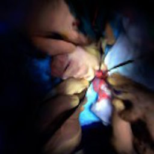
Occlusion-free 4D Gaussians for Open Surgery Videos Using Multi-Camera Shadowless Lamps
MICCAI 2025
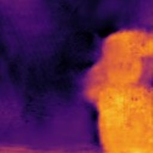
Dense Depth from Event Focal Stack
IEEE/CVF WACV 2025
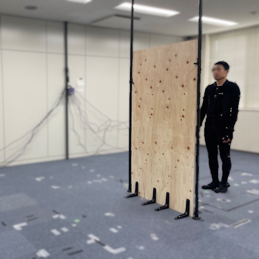
Toward Robust mmWave-based Human Pose Reconstruction via Signal Attenuation Compensation and Limb Point Refinement
ACCV 2026
🧊 Scene Representation
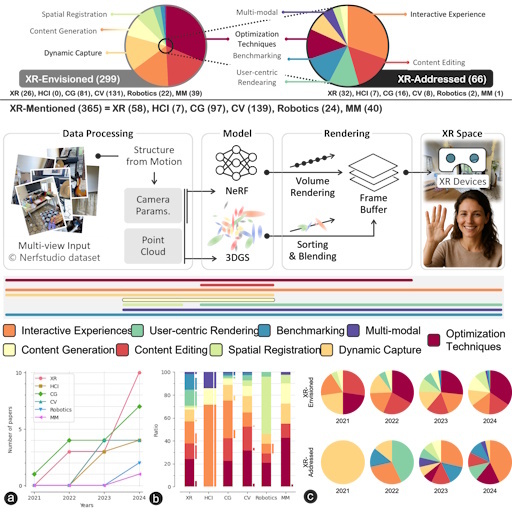
Radiance Fields in XR: A Survey on How Radiance Fields are Envisioned and Addressed for XR Research
IEEE TVCG (2025), IEEE ISMAR 2025

NeuralPVS: Learned Estimation of Potentially Visible Sets
ACM SIGGRAPH Asia 2025
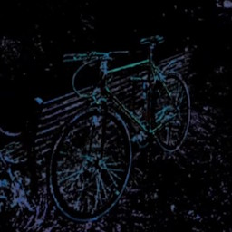
NEF: Neural Error Fields for Follow-up Training with Fewer Rays
VISAPP 2026

3D Gaussian Reference Parts for Robust Free-Viewpoint Visual Inspection
IEEE Access (2026)
🧠 Scene Understanding

SnapPhysics: A Physics-Aware Scene Graph from a Single View for Interactive Mixed Reality Scenes
IEEE ISMAR 2026
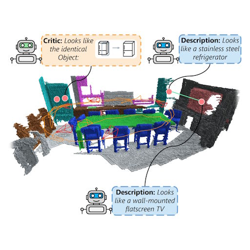
Think While You Map: Asynchronous Vision-Language Agents for Incremental 3D Scene Graphs
ECCV 2026
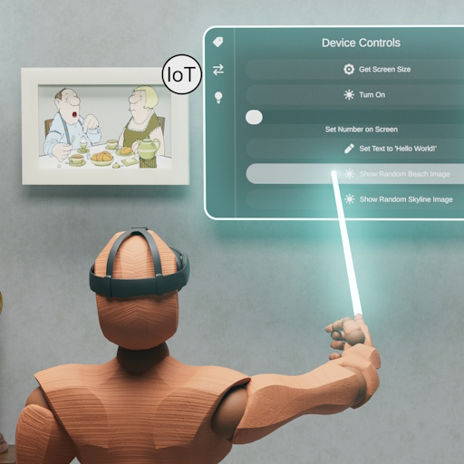
Semantic Scene Graphs for Creating a Localization-Ready Internet of Things
IEEE TVCG (2026)
👁️ Perception in XR
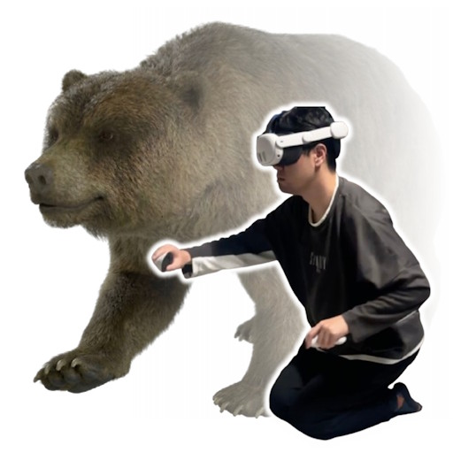
Embodying a Quadrupedal Avatar Through Posture- and Hand-Gesture-Congruent Locomotion
ACM VRST 2026
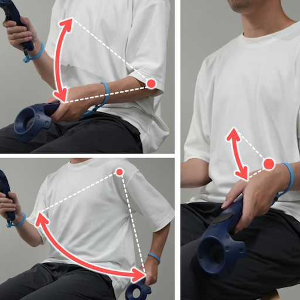
Primary Joint Effects in Arm-Based Seated VR Locomotion
ACM VRST 2026
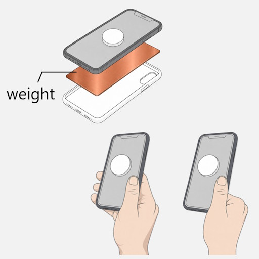
Tag-Along Virtual Windows Increase Perceived Resistance and Task Load in Augmented Reality
ACM VRST 2026
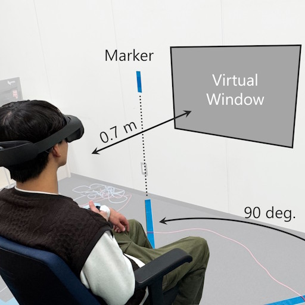
Tag-Along Virtual Windows Increase Perceived Resistance and Task Load in Augmented Reality
IEEE TVCG (2026), IEEE VR 2026

Perceived Weight of Mediated Reality Sticks
IEEE TVCG (2025)
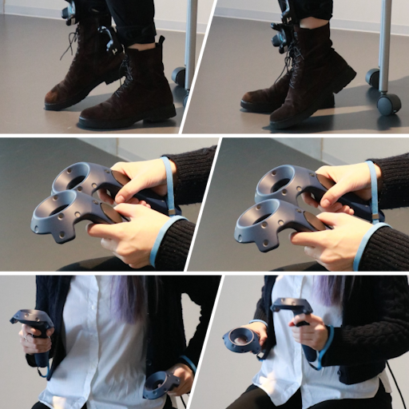
Not All WIP Are Perceived Equally: Different Speed Expectations in Seated Walk-in-Place Locomotion
ACM VRST 2025